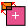

The Multi-planar Viewer is activated by pressing the Multiplanar Viewer button in the sub-application task bar. This will change the layout of the main and viewer window as shown in Figure 1. The main components of this layout are the viewer (MPR+3D viewer), the user interface to control the visualization, the toolbox, and information area.
The MPR+3D viewer
By default, the viewer is displayed in 4-viewer mode.
If you prefer to work with one larger view rather than four smaller views,
double-click on the viewer of your choice. To switch back to 4-viewer mode just
double-click on the single viewer again. Right-clicking on a viewer
activates the context-menu through which you can access tools and visualization options.
The User Interface
Data Selectors: In the upper part of the main window two data selectors allow selecting the primary and secondary image volumes to be displayed. The pull-down menus will list all compatible data objects that are available in Amira's workspace (Pool)). We define the terms "Primary" and "Overlay" in the context of the Multiplanar Viewer as:
2D Settings: controls for the colormap settings, the Primary-Overlay ratio (or the Alpha transparency if just one data set is displayed), the thickness and rendering mode of the thick slice in the 2D viewers. Thick slice rendering Modes:
3D Settings: same as 2D Settings but applied to the 3D viewer. Volume Rendering Modes:
The Toolbox
Below the label window, a toolbox provides access for the registration
tools. Depending on the currently selected tool the
area below the tool bar will show additional controls. The registration tools are activated only
if the Primary and the Overlay are both available and the tools are applied to the Overlay data set.
Two tabs are available in the toolbox: the Automatic and the Manual Registration.
 Automatic Registration
The interface and the functionalities of the Automatic Registration tools are the same
as the AffineRegistration module. Please see its documentation for a complete description and tutorial.
In additon the Monitor toggle allows the user to track the actual registration progress.
Transform Editor Options
The interface and the functionality of the Transform Editor Options corresponds to the dialog of the Transform Editor. Please refer to the Transform Editor documentation for a complete description.
Information Area
At the bottom of the control panel a status area informs the user about the data being visualized.
{kind=link}